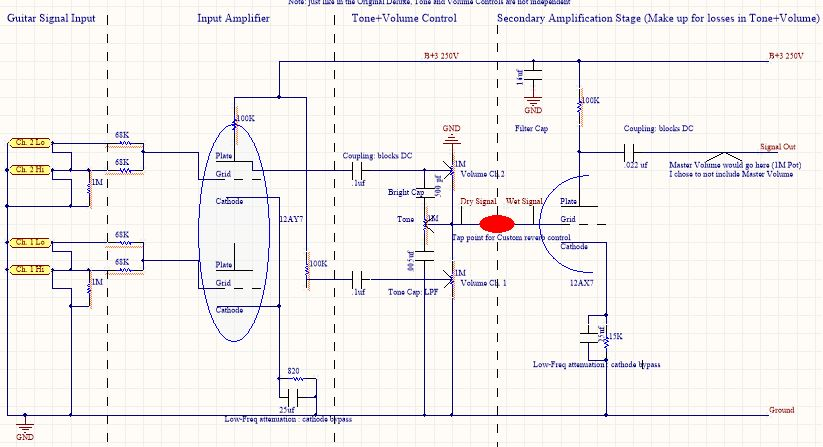
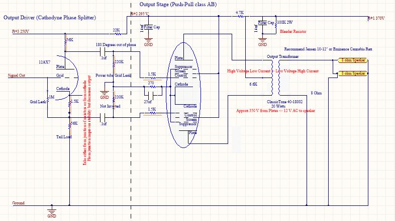
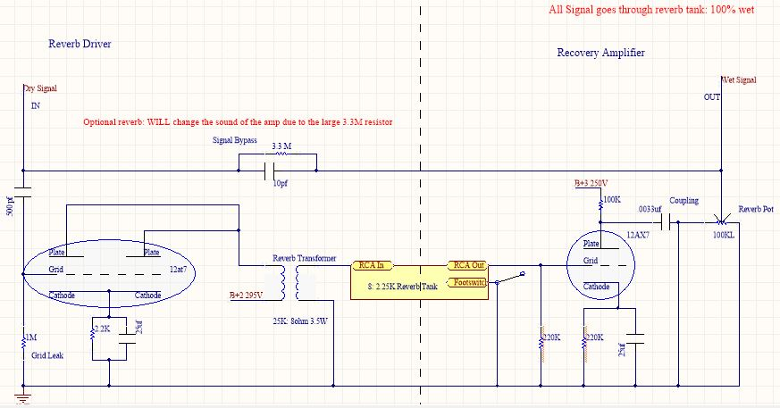
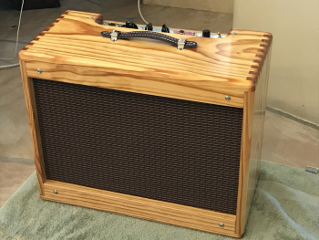
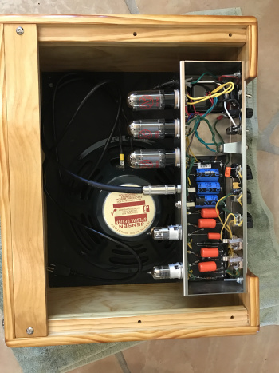
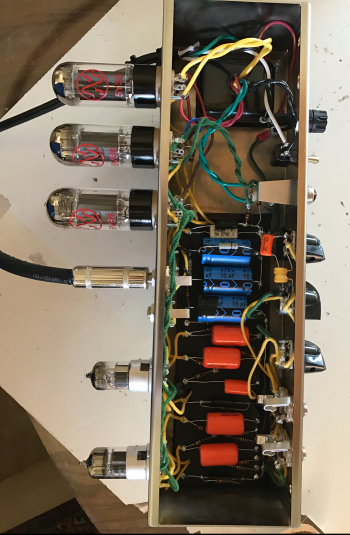
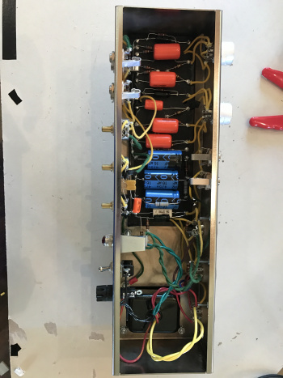
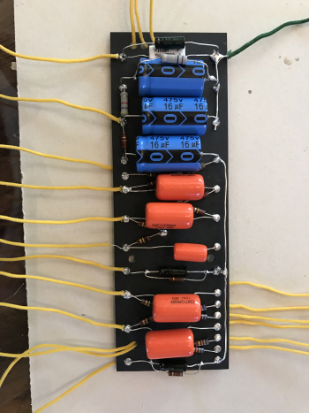
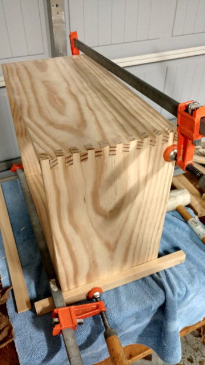
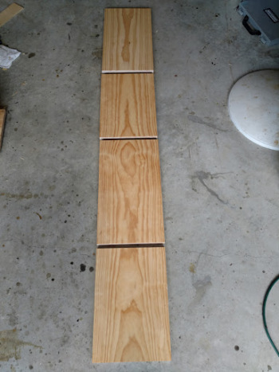

Guitar Amplifier Circuit Project Description
Over the summer of 2017, I decided to design and build my own guitar amplifier using vacuum tubes, which are the components used in high end vintage-style amplifiers. My design followed very closely to that of the original 5E3 Fender Deluxe amp of the 60’s, except it contained several modern tweaks such as:
- a capacitor bleeder circuit (to reduce the unsafe voltages after shutoff
- a diode rectifier circuit (pre-rectifies the 120V AC before it hits the rectifier tube, ensuring a dying tube won’t damage expensive components like transformers)
I used ‘Design and Construction of Tube Guitar Amplifiers’ by Robert Megantz as my primary reference when designing my schematic. I also purchased the metal chassis from a 5E3 kit online since I could not find stock metal of the correct shape.
- Class: 2-channel AB all Tube Amp
- Output Stage: Push-Pull Design
- Biasing: Cathode Biased
- Output: 15 Watts
Circuit schematics




Project Photos






